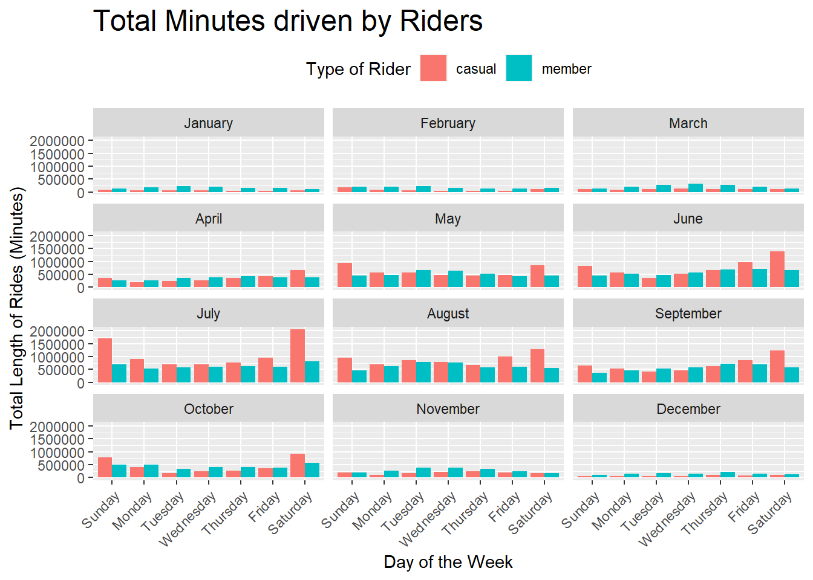

library(tidyverse)
library(gt)CYCLIST BIKE SHARE
Introduction
The analysis is done on Cyclist Trip Data obtained from Coursera Google Data Analytics course as part of Cap Stone Project.
The data contains month wise travel usage of bikes from the year of 2015-2023. We will be concentrating on data gathered in between July-2022 to June-2023 which will cover an entire year.
Let’s load the required packages first
- Loading
tidyverseandgtpackages
Loading and Formatting Data
- Let’s look at the structure of the data in one of the downloaded
.csvfiles.
trpdata_july_2022<-read_csv("F:/Data_Sci/Cap_Stone_Project/Cyclist_trip_data/202207-divvy-tripdata/202207-divvy-tripdata.csv")Rows: 823488 Columns: 13
── Column specification ────────────────────────────────────────────────────────
Delimiter: ","
chr (7): ride_id, rideable_type, start_station_name, start_station_id, end_...
dbl (4): start_lat, start_lng, end_lat, end_lng
dttm (2): started_at, ended_at
ℹ Use `spec()` to retrieve the full column specification for this data.
ℹ Specify the column types or set `show_col_types = FALSE` to quiet this message.glimpse(trpdata_july_2022)Rows: 823,488
Columns: 13
$ ride_id <chr> "954144C2F67B1932", "292E027607D218B6", "5776585258…
$ rideable_type <chr> "classic_bike", "classic_bike", "classic_bike", "cl…
$ started_at <dttm> 2022-07-05 08:12:47, 2022-07-26 12:53:38, 2022-07-…
$ ended_at <dttm> 2022-07-05 08:24:32, 2022-07-26 12:55:31, 2022-07-…
$ start_station_name <chr> "Ashland Ave & Blackhawk St", "Buckingham Fountain …
$ start_station_id <chr> "13224", "15541", "15541", "15541", "TA1307000117",…
$ end_station_name <chr> "Kingsbury St & Kinzie St", "Michigan Ave & 8th St"…
$ end_station_id <chr> "KA1503000043", "623", "623", "TA1307000164", "TA13…
$ start_lat <dbl> 41.90707, 41.86962, 41.86962, 41.86962, 41.89147, 4…
$ start_lng <dbl> -87.66725, -87.62398, -87.62398, -87.62398, -87.626…
$ end_lat <dbl> 41.88918, 41.87277, 41.87277, 41.79526, 41.93625, 4…
$ end_lng <dbl> -87.63851, -87.62398, -87.62398, -87.59647, -87.652…
$ member_casual <chr> "member", "casual", "casual", "casual", "member", "…- Let’s look at the columns and try to understand what they represent
ride_idis the unique identification token generated for each ride that was initiated.rideable_typeindicates the type of bike used for the ride.started_atandended_atgive us the time when the ride began and the ride ended respectively.start_station_nameandend_station_namegive us the names of stations where ride began and ended respectively.start_station_idandend_station_idare unique ID’s given to stations.start_latandstart_lngrepresent co-ordinates where the ride began.end_latandend_lngrepresent co-ordinates where the ride stopped.member_casualidentifies if the rider is a member or casual rider of the bike.
The trpdata_july_2022 contains 823488 rows and 13 columns. In the results we can see all the columns and their data types.
- Lets load data of remaining 11 months.
trpdata_aug_2022 <- read_csv("F:/Data_Sci/Cap_Stone_Project/Cyclist_trip_data/202208-divvy-tripdata/202208-divvy-tripdata.csv")
trpdata_sept_2022<- read_csv("F:/Data_Sci/Cap_Stone_Project/Cyclist_trip_data/202209-divvy-tripdata/202209-divvy-publictripdata.csv")
trpdata_oct_2022<- read_csv("F:/Data_Sci/Cap_Stone_Project/Cyclist_trip_data/202210-divvy-tripdata/202210-divvy-tripdata_raw.csv")
trpdata_nov_2022<- read_csv("F:/Data_Sci/Cap_Stone_Project/Cyclist_trip_data/202211-divvy-tripdata/202211-divvy-tripdata.csv")
trpdata_dec_2022 <- read_csv("F:/Data_Sci/Cap_Stone_Project/Cyclist_trip_data/202212-divvy-tripdata/202212-divvy-tripdata.csv")
trpdata_jan_2023 <- read_csv("F:/Data_Sci/Cap_Stone_Project/Cyclist_trip_data/202301-divvy-tripdata/202301-divvy-tripdata.csv")
trpdata_feb_2023 <- read_csv("F:/Data_Sci/Cap_Stone_Project/Cyclist_trip_data/202302-divvy-tripdata/202302-divvy-tripdata.csv")
trpdata_mar_2023 <- read_csv("F:/Data_Sci/Cap_Stone_Project/Cyclist_trip_data/202303-divvy-tripdata/202303-divvy-tripdata.csv")
trpdata_apr_2023 <- read_csv("F:/Data_Sci/Cap_Stone_Project/Cyclist_trip_data/202304-divvy-tripdata/202304-divvy-tripdata.csv")
trpdata_may_2023 <- read_csv("F:/Data_Sci/Cap_Stone_Project/Cyclist_trip_data/202305-divvy-tripdata/202305-divvy-tripdata.csv")
trpdata_june_2023 <- read_csv("F:/Data_Sci/Cap_Stone_Project/Cyclist_trip_data/202306-divvy-tripdata/202306-divvy-tripdata.csv")As structure of .csv’s is same across the all the files lets combine all the .csv files into a single data frame which contains data of all 12 months.
- Combining all the monthly data to one previous year data(
data_one_year_raw).
data_one_year_raw <- rbind(trpdata_july_2022, trpdata_aug_2022,
trpdata_sept_2022, trpdata_oct_2022,
trpdata_nov_2022, trpdata_dec_2022,
trpdata_jan_2023, trpdata_feb_2023,
trpdata_mar_2023, trpdata_apr_2023,
trpdata_may_2023, trpdata_june_2023)
glimpse(data_one_year_raw)Rows: 5,779,444
Columns: 13
$ ride_id <chr> "954144C2F67B1932", "292E027607D218B6", "5776585258…
$ rideable_type <chr> "classic_bike", "classic_bike", "classic_bike", "cl…
$ started_at <dttm> 2022-07-05 08:12:47, 2022-07-26 12:53:38, 2022-07-…
$ ended_at <dttm> 2022-07-05 08:24:32, 2022-07-26 12:55:31, 2022-07-…
$ start_station_name <chr> "Ashland Ave & Blackhawk St", "Buckingham Fountain …
$ start_station_id <chr> "13224", "15541", "15541", "15541", "TA1307000117",…
$ end_station_name <chr> "Kingsbury St & Kinzie St", "Michigan Ave & 8th St"…
$ end_station_id <chr> "KA1503000043", "623", "623", "TA1307000164", "TA13…
$ start_lat <dbl> 41.90707, 41.86962, 41.86962, 41.86962, 41.89147, 4…
$ start_lng <dbl> -87.66725, -87.62398, -87.62398, -87.62398, -87.626…
$ end_lat <dbl> 41.88918, 41.87277, 41.87277, 41.79526, 41.93625, 4…
$ end_lng <dbl> -87.63851, -87.62398, -87.62398, -87.59647, -87.652…
$ member_casual <chr> "member", "casual", "casual", "casual", "member", "…data_one_year_rawdata frame contains data from the month of July-2022 to June-2023.
Cleaning the data
- Checking and counting “NA” in each column of the data frame. Data is much better without “NA” as they can cause problems while aggregating data and calculating averages and sums. We can use
mapfunction to perform a function to all of the columns.
na_in_cols <- data_one_year_raw %>% map(is.na) %>% map(sum) %>% unlist()
na_in_cols ride_id rideable_type started_at ended_at
0 0 0 0
start_station_name start_station_id end_station_name end_station_id
857860 857992 915655 915796
start_lat start_lng end_lat end_lng
0 0 5795 5795
member_casual
0 As NA’s are not present in the times columns i.e,
started_atandended_atwe don’t need to worry ourselves about writingna.rmduring aggregation and manipulation of data but it is a good practice to do so.Finding the length or duration of the rides by making a new column
ride_lengthin minutes and making sure that theride_lengthis not negative by usingif_elsefunction. Eliminating stations where station names and longitude and latitude co-ordinates are not present.
# As we remove all the NA's it is better to save the data as "data_one_year".
data_one_year <- data_one_year_raw %>%
mutate(ride_length = difftime(ended_at, started_at,
units = "min")) %>%
mutate(ride_length = as.numeric(ride_length))
data_one_year <- data_one_year %>%
mutate(ride_length = if_else(ride_length < 0, 0, ride_length)) %>%
filter(ride_length >= 2,
start_station_name != "" & end_station_name != "" &
!is.na(start_lat) & !is.na(start_lng) &
!is.na(end_lat) & !is.na(end_lng)) %>% arrange(ride_length) %>%
select(ride_id, rideable_type, ride_length,
started_at, ended_at, member_casual)
glimpse(data_one_year)Rows: 4,243,652
Columns: 6
$ ride_id <chr> "898EAA520DDCF78F", "50BACAD085808776", "961FDB38764FE54…
$ rideable_type <chr> "classic_bike", "classic_bike", "classic_bike", "classic…
$ ride_length <dbl> 2, 2, 2, 2, 2, 2, 2, 2, 2, 2, 2, 2, 2, 2, 2, 2, 2, 2, 2,…
$ started_at <dttm> 2022-07-27 17:51:57, 2022-07-31 20:02:35, 2022-07-06 18…
$ ended_at <dttm> 2022-07-27 17:53:57, 2022-07-31 20:04:35, 2022-07-06 18…
$ member_casual <chr> "member", "member", "casual", "member", "casual", "membe…Analysis of Data
Aggregating data by Rider type and Bike type.
- Aggregating data to see “Average minutes per ride” grouped by “bike type” and “rider type” after removing rides less than 2 minutes (As rides less than 2 minutes tend to have the same start and stop stations).
data_one_year_aggregate <- data_one_year %>%
select(ride_id, rideable_type, member_casual, started_at, ended_at,
ride_length, everything()) %>%
filter(ride_length >= 2) %>%
summarise("Number of Rides" = n(),
"Ride Length" = sum(ride_length, na.rm = TRUE),
"Max Ride Length" = round(max(ride_length), 2),
"Avg Ride Length in Minutes" = round(mean(ride_length), 2),
.by = c(member_casual, rideable_type)) %>%
arrange(desc("Avg Ride Length in Minutes")) %>%
gt() %>% tab_header(title = "Average length of Rides") %>%
cols_label(member_casual = "Rider type",
rideable_type = "Bike type")
data_one_year_aggregate| Average length of Rides | |||||
| Rider type | Bike type | Number of Rides | Ride Length | Max Ride Length | Avg Ride Length in Minutes |
|---|---|---|---|---|---|
| member | classic_bike | 1630991 | 21996488 | 1497.87 | 13.49 |
| casual | classic_bike | 781530 | 19383358 | 1497.75 | 24.80 |
| casual | electric_bike | 709649 | 11372659 | 479.98 | 16.03 |
| member | electric_bike | 984688 | 10968684 | 480.00 | 11.14 |
| casual | docked_bike | 136794 | 6899998 | 32035.45 | 50.44 |
We can clearly notice in Table 1 that member riders have more number of rides with both classic and electric bikes while the average ride length is higher with casual riders.
- Calculating and visualizing Average ride length by “Rider type”.
average_ride_by_rideable_type <- data_one_year %>%
rename("Rider type" = member_casual, "Bike type" = rideable_type) %>%
summarise(ride_length = sum(ride_length, na.rm = TRUE),
ride_count = n(),
avg_ride_length = ride_length/ride_count,
.by = c(`Rider type`, `Bike type`)) %>%
ggplot(aes(`Rider type`, avg_ride_length)) +
geom_col(aes(fill = `Bike type`), position = "dodge") +
labs(x = "Bike type", y = "Avg Length of Ride(Minutes)",
title = "Average ride length by Bike type") +
theme_minimal() +
theme(plot.title = element_text(size = 18),
legend.position = "bottom")
average_ride_by_rideable_typeThe above Figure 1 clearly shows that members average ride lengths between bike types doesn’t differ much for member riders but differs with casual riders upto 8 minutes.
Note
Further down in the analysis “docked_bike” type is dropped as no proper documentation is available in the course.
Analysing data by Time of the year and Ride Length
Ride Patterns Across the Weeks and Months of the Year
- Calculating and visualizing ride patterns in a week for number of rides.
rideable_order <- c("classic_bike", "electric_bike", "docked_bike")
rides_on_days <- data_one_year %>%
filter(rideable_type != "docked_bike") %>%
mutate(month = month(started_at, label = TRUE,
abbr = FALSE)) %>%
mutate(rideable_type = factor(rideable_type,
levels = rideable_order)) %>% ggplot(aes(wday(started_at, label = TRUE, abbr = FALSE))) +
geom_bar(aes(fill = member_casual), position = "dodge") +
facet_wrap(~month, nrow = 3) +
labs(x = "Day of the Week", y = "Number of rides",
title = "Riding pattrens on Weekdays of each Month",
subtitle = "From July-2022 to June-2023",
fill = "Type of Rider") +
theme_light() +
theme(legend.position = "top",
axis.text.x = element_text(angle = 45, hjust = 1),
plot.title = element_text(size = 18))
rides_on_days The above Figure 2 clearly shows how the number of rides change due to seasons. In winters the number of rides decrease very drastically may be because of temperature and snow. In Summers the number of rides are at its peak.
The number of rides driven by member riders are increases through the week especially in working week days but for casual riders the rides increase in the weekends. The Figure 2 shows number of rides on Saturdays and Sundays by casual members overtake membership riders in the months of July and August.
Comparing variation in ride lengths of average and total ride lengths by bike type.
Aggregating data for the visualization.
rides_on_days <- data_one_year %>%
mutate(day = wday(started_at, label = TRUE, abbr = FALSE),
month = month(started_at, label = TRUE, abbr = FALSE)) %>%
summarise(ride_count = n(),
sum_ride_length = sum(ride_length, na.rm = TRUE),
avg_ride_length = mean(ride_length, na.rm = TRUE),
.by = c(month, day, member_casual))
rides_on_days # A tibble: 168 × 6
month day member_casual ride_count sum_ride_length avg_ride_length
<ord> <ord> <chr> <int> <dbl> <dbl>
1 July Wednesday member 45928 603429. 13.1
2 July Sunday member 44328 685475. 15.5
3 July Wednesday casual 31631 703360. 22.2
4 July Saturday member 51852 816009. 15.7
5 July Thursday casual 34895 759013. 21.8
6 July Friday member 46398 614466. 13.2
7 July Friday casual 41198 959168. 23.3
8 July Monday casual 32960 917333. 27.8
9 July Monday member 38746 530041. 13.7
10 July Sunday casual 59528 1714086. 28.8
# ℹ 158 more rowsLet’s visualize the aggregated data
rides_on_days_len <- rides_on_days %>%
ggplot(aes(day, sum_ride_length))+
geom_col(aes(fill = member_casual), position = "dodge")+
facet_wrap(~month, ncol = 3)+
labs(x = "Day of the Week", y = "Total Length of Rides (Minutes)",
title = "Total Minutes driven by Riders",
fill = "Type of Rider") +
theme(legend.position = "top",
axis.text.x = element_text(angle = 45, hjust = 1),
plot.title = element_text(size = 18))
rides_on_days_len
rides_on_days_len_avg <- rides_on_days %>%
ggplot(aes(day, avg_ride_length))+
geom_col(aes(fill = member_casual), position = "dodge")+
facet_wrap(~month, ncol = 3) +
labs(x = "Day of the Week", y = "Average Length of Rides (Minutes)",
title = "Average Minutes driven by Riders",
fill = "Type of Rider") +
theme(legend.position = "top",
axis.text.x = element_text(angle = 45, hjust = 1),
plot.title = element_text(size = 18))
rides_on_days_len_avgThe ride length is varying across months and seasons just as number of rides but average ride length is not fluctuating that much across the year.
Rides through out the day
Let’s look at when the rides are starting to know at what time of day the rides peak and are at the lowest.
rides_on_time_of_day <- data_one_year %>%
mutate(time_of_day = format(as.POSIXct(ended_at), "%H"),
wk_day = wday(started_at, label = TRUE, abbr = FALSE)) %>%
summarise(ride_id = n(),
.by = c(time_of_day, member_casual))
rides_on_time_of_day %>%
ggplot(aes(time_of_day, ride_id, fill = ride_id )) +
geom_col() +
labs(x = "Hour of the day", y = "Number of Rides",
fill = "Max Rides") +
facet_wrap(~member_casual, ncol = 1) +
scale_y_continuous(
labels = scales::number_format(scale = 1e-3, suffix = "K")) +
theme_minimal() +
theme(legend.position = "none")
- Most of the rides start at 5:00 PM in the evening showing most of the rides begin after office hours for both
caualandmemberriders but members peak twice at 8:00 AM and 5:00 PM but the casual riders peak only once at 5:00 PM.
Analysing of Stations and Routes.
- Removing “NA” and blanks from the stations columns.
data_one_year <- data_one_year_raw %>%
mutate(ride_length = difftime(ended_at, started_at,
units = "min")) %>%
mutate(ride_length = as.numeric(ride_length)) %>%
mutate(ride_length = if_else(ride_length < 0, 0, ride_length)) %>%
filter(ride_length >= 2) %>%
drop_na(start_station_name, end_station_name ) %>%
filter(start_station_name != "" & end_station_name != "",
started_at != ended_at)
glimpse(data_one_year)Rows: 4,243,662
Columns: 14
$ ride_id <chr> "954144C2F67B1932", "57765852588AD6E0", "B5B6BE4431…
$ rideable_type <chr> "classic_bike", "classic_bike", "classic_bike", "cl…
$ started_at <dttm> 2022-07-05 08:12:47, 2022-07-03 13:58:49, 2022-07-…
$ ended_at <dttm> 2022-07-05 08:24:32, 2022-07-03 14:06:32, 2022-07-…
$ start_station_name <chr> "Ashland Ave & Blackhawk St", "Buckingham Fountain …
$ start_station_id <chr> "13224", "15541", "15541", "TA1307000117", "15535",…
$ end_station_name <chr> "Kingsbury St & Kinzie St", "Michigan Ave & 8th St"…
$ end_station_id <chr> "KA1503000043", "623", "TA1307000164", "TA130700005…
$ start_lat <dbl> 41.90707, 41.86962, 41.86962, 41.89147, 41.88461, 4…
$ start_lng <dbl> -87.66725, -87.62398, -87.62398, -87.62676, -87.644…
$ end_lat <dbl> 41.88918, 41.87277, 41.79526, 41.93625, 41.86712, 4…
$ end_lng <dbl> -87.63851, -87.62398, -87.59647, -87.65266, -87.641…
$ member_casual <chr> "member", "casual", "casual", "member", "member", "…
$ ride_length <dbl> 11.750000, 7.716667, 58.483333, 26.300000, 8.716667…- Making a new column to identify travelled routes.
data_one_year <- data_one_year %>%
mutate(stations_travelled = paste(start_station_name,
"-", end_station_name))
glimpse(data_one_year)Rows: 4,243,662
Columns: 15
$ ride_id <chr> "954144C2F67B1932", "57765852588AD6E0", "B5B6BE4431…
$ rideable_type <chr> "classic_bike", "classic_bike", "classic_bike", "cl…
$ started_at <dttm> 2022-07-05 08:12:47, 2022-07-03 13:58:49, 2022-07-…
$ ended_at <dttm> 2022-07-05 08:24:32, 2022-07-03 14:06:32, 2022-07-…
$ start_station_name <chr> "Ashland Ave & Blackhawk St", "Buckingham Fountain …
$ start_station_id <chr> "13224", "15541", "15541", "TA1307000117", "15535",…
$ end_station_name <chr> "Kingsbury St & Kinzie St", "Michigan Ave & 8th St"…
$ end_station_id <chr> "KA1503000043", "623", "TA1307000164", "TA130700005…
$ start_lat <dbl> 41.90707, 41.86962, 41.86962, 41.89147, 41.88461, 4…
$ start_lng <dbl> -87.66725, -87.62398, -87.62398, -87.62676, -87.644…
$ end_lat <dbl> 41.88918, 41.87277, 41.79526, 41.93625, 41.86712, 4…
$ end_lng <dbl> -87.63851, -87.62398, -87.59647, -87.65266, -87.641…
$ member_casual <chr> "member", "casual", "casual", "member", "member", "…
$ ride_length <dbl> 11.750000, 7.716667, 58.483333, 26.300000, 8.716667…
$ stations_travelled <chr> "Ashland Ave & Blackhawk St - Kingsbury St & Kinzie…- Finding which route is most traveled by casual riders.
most_travelled_routes_casual <- data_one_year %>%
filter(member_casual == "casual",
ride_length >= 2) %>%
summarise(ride_count = n(),
avg_ride_length = round(mean(ride_length), 2),
.by = c(stations_travelled)) %>%
arrange(desc(ride_count))
head(most_travelled_routes_casual)# A tibble: 6 × 3
stations_travelled ride_count avg_ride_length
<chr> <int> <dbl>
1 Streeter Dr & Grand Ave - Streeter Dr & Grand Ave 8259 46.3
2 DuSable Lake Shore Dr & Monroe St - DuSable Lake S… 5726 38.3
3 DuSable Lake Shore Dr & Monroe St - Streeter Dr & … 4840 27.1
4 Michigan Ave & Oak St - Michigan Ave & Oak St 3754 50.9
5 Millennium Park - Millennium Park 3188 45.4
6 Streeter Dr & Grand Ave - DuSable Lake Shore Dr & … 2663 27.8NROW(most_travelled_routes_casual)[1] 130373Streeter Dr & Grand Ave - Streeter Dr & Grand Ave stands to be the most popular station with 9698 rides by casual riders.
most_travelled_routes_member <- data_one_year %>%
filter(member_casual == "member") %>%
summarise(ride_count = n(),
total_ride_length = sum(ride_length),
ride_length = round(mean(ride_length), 2),
.by = stations_travelled) %>% arrange(desc(ride_count))
head(most_travelled_routes_member)# A tibble: 6 × 4
stations_travelled ride_count total_ride_length ride_length
<chr> <int> <dbl> <dbl>
1 Ellis Ave & 60th St - University Ave… 6149 25928. 4.22
2 University Ave & 57th St - Ellis Ave… 5771 26605. 4.61
3 Ellis Ave & 60th St - Ellis Ave & 55… 5676 28427. 5.01
4 Ellis Ave & 55th St - Ellis Ave & 60… 5347 27187. 5.08
5 State St & 33rd St - Calumet Ave & 3… 4037 17795. 4.41
6 Calumet Ave & 33rd St - State St & 3… 3836 15538. 4.05NROW(most_travelled_routes_member)[1] 144802Ellis Ave & 60th St - University Ave & 57th St stands as the most traveled route by member riders with 6153 rides per anum.
- Finding which station has most ride starting points and which station has most ending points.
most_starting_points <- data_one_year %>%
summarise(ride_count = n(),
.by = start_station_name) %>%
select(start_station_name, ride_count) %>%
slice_max(ride_count, n = 10)
most_starting_points# A tibble: 10 × 2
start_station_name ride_count
<chr> <int>
1 Streeter Dr & Grand Ave 63899
2 DuSable Lake Shore Dr & Monroe St 36757
3 Michigan Ave & Oak St 35050
4 DuSable Lake Shore Dr & North Blvd 34167
5 Wells St & Concord Ln 32175
6 Clark St & Elm St 31832
7 Kingsbury St & Kinzie St 30820
8 Millennium Park 29894
9 Theater on the Lake 28864
10 Wells St & Elm St 27152most_starting_points$ride_count %>% sum()[1] 350610most_ending_points <- data_one_year %>%
summarise(ride_count = n(),
.by = end_station_name) %>%
select(end_station_name, ride_count) %>%
slice_max(ride_count, n = 10)
most_ending_points# A tibble: 10 × 2
end_station_name ride_count
<chr> <int>
1 Streeter Dr & Grand Ave 65542
2 DuSable Lake Shore Dr & North Blvd 37093
3 Michigan Ave & Oak St 35977
4 DuSable Lake Shore Dr & Monroe St 35629
5 Wells St & Concord Ln 32879
6 Clark St & Elm St 31394
7 Millennium Park 31023
8 Kingsbury St & Kinzie St 29805
9 Theater on the Lake 29482
10 Wells St & Elm St 27360most_ending_points$ride_count %>% sum()[1] 356184Streeter Dr & Grand Ave found to be the most popular station as most rides start and end at that station.
Looking at Filtered data
Just because we filtered the data with NA’s that does not mean that the data is not helpful, it just means that it does not our fulfill specific need when calculating or manipulating data.
Let’s look at NA’s in the data once again.
na_in_cols <- data_one_year_raw %>% map( ~sum(is.na(.))) %>% unlist()
na_in_cols ride_id rideable_type started_at ended_at
0 0 0 0
start_station_name start_station_id end_station_name end_station_id
857860 857992 915655 915796
start_lat start_lng end_lat end_lng
0 0 5795 5795
member_casual
0 - We can see that the
start_station_nameandend_station_namehave majority of NA’s it means that rides are starting and ending where stations are not there.
prop_na <- na_in_cols["start_station_name"]/nrow(data_one_year_raw)
prop_nastart_station_name
0.148433 - 14.84% of data in
start_station_nameis missing and good thing is that none of thestart_lngandstart_lathave any NA’s and we can use this for find the most traveled routes.
data_na_one_year <- data_one_year_raw %>%
filter(is.na(start_station_name) | start_station_name == "") %>%
drop_na(end_lat, end_lng)
glimpse(data_na_one_year)Rows: 857,860
Columns: 13
$ ride_id <chr> "DCB3D2C9B63999EC", "D1ACA8280DA02AE3", "EF98673429…
$ rideable_type <chr> "electric_bike", "electric_bike", "electric_bike", …
$ started_at <dttm> 2022-07-04 15:04:26, 2022-07-12 14:43:51, 2022-07-…
$ ended_at <dttm> 2022-07-04 15:32:38, 2022-07-12 14:49:28, 2022-07-…
$ start_station_name <chr> NA, NA, NA, NA, NA, NA, NA, NA, NA, NA, NA, NA, NA,…
$ start_station_id <chr> NA, NA, NA, NA, NA, NA, NA, NA, NA, NA, NA, NA, NA,…
$ end_station_name <chr> "Ashland Ave & Blackhawk St", "Cornell Ave & Hyde P…
$ end_station_id <chr> "13224", "KA1503000007", "KA1503000007", "847", "48…
$ start_lat <dbl> 41.95, 41.80, 41.80, 41.74, 42.02, 41.95, 41.95, 41…
$ start_lng <dbl> -87.64, -87.59, -87.59, -87.55, -87.69, -87.67, -87…
$ end_lat <dbl> 41.90707, 41.80241, 41.80241, 41.73000, 42.01000, 4…
$ end_lng <dbl> -87.66725, -87.58692, -87.58692, -87.55000, -87.690…
$ member_casual <chr> "member", "member", "member", "member", "member", "…- Now let’s make new columns
start_pointwithstart_lngandstart_latandend_pointwithend_latandend_lng.
data_na_one_year <- data_na_one_year %>%
mutate(start_point = paste(start_lat, start_lng),
end_point = paste(end_lat, end_lng))
glimpse(data_na_one_year)Rows: 857,860
Columns: 15
$ ride_id <chr> "DCB3D2C9B63999EC", "D1ACA8280DA02AE3", "EF98673429…
$ rideable_type <chr> "electric_bike", "electric_bike", "electric_bike", …
$ started_at <dttm> 2022-07-04 15:04:26, 2022-07-12 14:43:51, 2022-07-…
$ ended_at <dttm> 2022-07-04 15:32:38, 2022-07-12 14:49:28, 2022-07-…
$ start_station_name <chr> NA, NA, NA, NA, NA, NA, NA, NA, NA, NA, NA, NA, NA,…
$ start_station_id <chr> NA, NA, NA, NA, NA, NA, NA, NA, NA, NA, NA, NA, NA,…
$ end_station_name <chr> "Ashland Ave & Blackhawk St", "Cornell Ave & Hyde P…
$ end_station_id <chr> "13224", "KA1503000007", "KA1503000007", "847", "48…
$ start_lat <dbl> 41.95, 41.80, 41.80, 41.74, 42.02, 41.95, 41.95, 41…
$ start_lng <dbl> -87.64, -87.59, -87.59, -87.55, -87.69, -87.67, -87…
$ end_lat <dbl> 41.90707, 41.80241, 41.80241, 41.73000, 42.01000, 4…
$ end_lng <dbl> -87.66725, -87.58692, -87.58692, -87.55000, -87.690…
$ member_casual <chr> "member", "member", "member", "member", "member", "…
$ start_point <chr> "41.95 -87.64", "41.8 -87.59", "41.8 -87.59", "41.7…
$ end_point <chr> "41.907066 -87.667252", "41.802406 -87.586924", "41…- Aggregating data to check for the most traveled routes without a
start_stationname.
First join start_point and end_point to make route_travelled then count the rides by routes_travelled to see the most traveled path.
most_travelled_na_routes <- data_na_one_year %>%
filter(start_point != end_point) %>%
mutate(route_travelled = paste(start_point, ",", end_point)) %>%
summarise(ride_count = n(),
.by = route_travelled) %>%
slice_max(ride_count, n=10)
most_travelled_na_routes# A tibble: 10 × 2
route_travelled ride_count
<chr> <int>
1 41.79 -87.6 , 41.8 -87.59 1459
2 41.79 -87.59 , 41.79 -87.6 1354
3 41.8 -87.59 , 41.79 -87.6 1335
4 41.79 -87.6 , 41.79 -87.59 1320
5 41.8 -87.6 , 41.79 -87.6 1099
6 41.79 -87.6 , 41.78509714636 -87.6010727606 1058
7 41.79 -87.6 , 41.8 -87.6 999
8 41.79 -87.6 , 41.799568 -87.594747 917
9 41.79 -87.6 , 41.78 -87.6 697
10 41.89 -87.63 , 41.9 -87.63 690sum(most_travelled_na_routes["ride_count"])[1] 10928- 10928 rides are not small when compared to most traveled routes, but 10928 rides in 5 million rides is not that high.
Conclusions
As casual members go for long rides on the weekends, offers on weekend rides with membership buying may help attract more memberships and might also make membership riders to make weekend end trips.
To increase the memberships of the Cyclist Bike Share the company needs to place stations where most new rides are coming up and routes are travelled more.